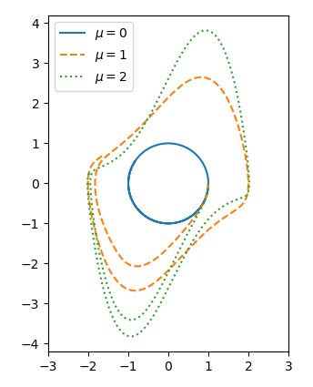
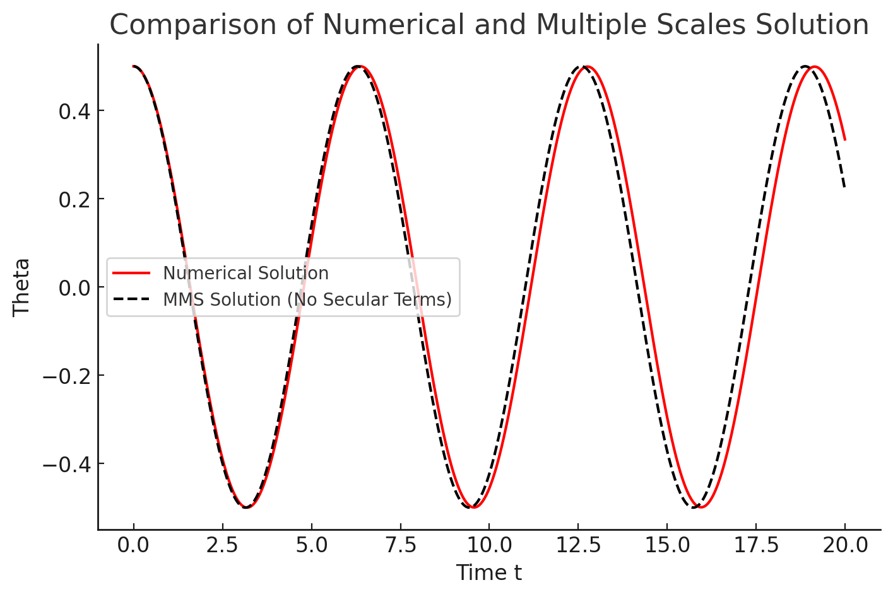

The Van der Pol Oscillator#
The Van der Pol oscillator is a nonlinear dynamical system with broad applications in physics, biology, and engineering. The Van der Pol oscillator was first proposed by Dutch engineer and physicist Balthasar van der Pol while working at Philips. He discovered stable oscillations, which he called relaxation oscillations (now identified as a type of limit cycle), in electrical circuits containing vacuum tubes. When these circuits were driven near the limit cycle, their current synchronized with the driving signal, a phenomenon known as entrainment. In 1927, Van der Pol and his colleague Van der Mark reported in Nature[1] that irregular noise was observed at specific drive frequencies, which was later understood to be deterministic chaos.
The Van der Pol equation has been widely applied in both physical and biological sciences. In biology, FitzHugh and Nagumo extended the equation to model neuron action potentials in a planar field. It has also been used in seismology to model the interaction of geological fault plates and in phonation research to describe oscillations of the vocal folds.
[1]”Frequency Demultiplication” by Balth. van der Pol and J. van der Mark, published in Nature, Volume 120, pages 363–364, on September 10, 1927.
Mathematical Formulation#
The Van der Pol oscillator is governed by the second-order nonlinear differential equation:
where:
\(x(t)\) is the state variable (e.g., displacement or voltage).
\(\mu > 0\) is the nonlinearity parameter, controlling the strength of damping and the nonlinearity.
This equation can also be written as a system of first-order ODEs:
Dynamics#
Small \(\mu\): The system behaves like a harmonic oscillator with nearly sinusoidal solutions.
Large \(\mu\): The system exhibits nonlinear effects, with relaxation oscillations—periodic oscillations with sharp transitions and slow changes in amplitude.
We can see this in the phase-portrait of this system:
#
Key Features#
Nonlinear Damping:
When \(|x| > 1\): The damping is positive (energy dissipation).
When \(|x| < 1\): The damping is negative (energy is pumped into the system).
This mechanism drives the system toward a limit cycle.
Limit Cycle Oscillations:
For \(\mu > 0\), the system exhibits stable limit cycles regardless of initial conditions.
The amplitude of the limit cycle is approximately independent of \(\mu\), but the shape becomes more pronounced with larger \(\mu\).
Self-Sustained Oscillations:
Oscillations persist due to the balance between energy input (negative damping) and dissipation (positive damping).
Applications#
Electrical Engineering:
Modeling vacuum tube circuits and oscillators.Biology:
Describing heartbeat dynamics and neural oscillations.Mechanical Systems:
Modeling systems with non-linear damping.Synchronization:
The Van der Pol oscillator is often used to study synchronization phenomena in coupled systems.
Method of Multiple Scales#
Rationale#
A simple example illustrating the need for an additional super-slow time scale is the linearly damped oscillator:
The solution is:
In this case:
The amplitude drifts on the time scale \( O(\varepsilon^{-1}) \).
The phase drifts on the longer time scale \( O(\varepsilon^{-2}) \).
By the time the phase has shifted significantly, the amplitude has already decayed substantially. In general when working to \(\mathcal{O}(\varepsilon^k)\) on a time scale \(\mathcal{O}(\varepsilon^{k-n})\) one must expect to have a hierarchy of \(n\) slow time scales. Some of these may be essential to the system, representing genuinely different processes.
Non-linear Pendulum#
For the non-linear pendulum, \(\ddot{\theta} + \sin(\theta) = 0\) we examined perturbatie solutions last week. The perturbation series that we derived for \( \theta(t) \) had a secular term (proportional to \( t \)) that causes it to lose validity at large times, even for small \( \varepsilon \). The physical cause of this problem was a slow phase drift of the true solution away from the unperturbed solution due to the nonlinear correction to the pendulum period. It would be nice to devise a perturbation series approach that remained valid at long time by accounting for such slow drifts to avoid secular terms. The method of multiple scales accomplishes this goal.
The idea, as applied to the nonlinear pendulum problem,
is to make \( \theta(t) \) formally a function of multiple time scales that capture the fast and slow time variability of the solution. Since the first nonlinear correction to the solution is of order \( \varepsilon^2 \) compared to the unperturbed solution, we introduce the timescales
and (to the order of accuracy needed for our purposes)
Having multiple variables to describe the time dependence is redundant, but this redundancy can be exploited to develop a perturbation series with no secular terms that is uniformly valid for all small \( \varepsilon \).
Turning to the equation, note that
so that
while
Substituting these series into the nonlinear pendulum equation and sorting by increasing powers of \( \varepsilon \), we get:
\( \mathcal{O}\left(\varepsilon^1\right) Order \):#
Solving this,
The formal dependence on the slow time \( t_2 \) allows the leading-order solution to be more general than in our original perturbation series solution. This is how the method accounts for the slow phase shift of the perturbed solution.
\( \mathcal{O}\left(\varepsilon^3\right) \) Order:#
Using the known form of \( \theta_1 \), we deduce:
To suppress secular terms, the coefficient of \( e^{it} \) and \( e^{-it} \) must be zero:
Separating into real and imaginary parts,
This pair of coupled ODEs determines the slow evolution of the leading-order solution. Noting that
Thus, the ODEs simplify to:
Solving these,
Thus, the slow-time behavior of the leading-order solution is:
The corresponding period is:
which matches the result derived from previous methods.
\( \theta_3(t_0, t_2) \) Correction Term#
Solving for the correction term,
By solving for \( \theta_3 \), we find:
Matching initial conditions,
Thus,
which is consistent with the regular perturbation series - but without the secular terms!
We can see the difference in a plot, against the numerical solutions: 
Van der Pol Application#
Applying this method to the Van der Pol oscillator,
subject to:
Treating the problem as a regular one yields the approximation:
This expansion is asymptotic for fixed \( t \) as \( \varepsilon \to 0 \), but breaks down when \( t = \mathcal{O}\left(\varepsilon^{-1}\right) \). (It is, however, possible to prove that the expansion converges!)
The problem with the naive approximation is that the \( \varepsilon \)-damping changes the amplitude of the oscillation on a time scale \( \mathcal{O}\left(\varepsilon^{-1}\right) \) due to the slow accumulation of small effects. Thus, the oscillator has two processes acting on their own time scales:
The basic oscillation on the time scale of \( \mathcal{O}\left(1\right) \) due to inertia causing the restoring force to overshoot the equilibrium position.
The slow drift in the amplitude (and possibly the phase) on the time scale \( \mathcal{O}\left(\varepsilon^{-1}\right) \) due to small friction.
We recognize these two time scales by introducing two time variables:
The slowly changing features will then be combined into factors that are functions of \( T \), while the rapidly changing features will be combined into factors that are functions of \( \tau \). Thus, we look for a solution of the form:
As real time \( t \) increases, the fast time \( \tau \) increases at the same rate, while the slow time \( T \) increases slowly. Thus,
We now seek an asymptotic approximation for \( x \) allowing for changes over the long time scale. Thus, we pose:
with the requirement that the expansion be asymptotic for \( T = O(1) \). Substituting into the governing equation and comparing coefficients of \( \varepsilon^n \), we find a sequence of problems.
\( \mathcal{O}\left(\varepsilon^0\right) \) order:#
with initial conditions:
Integrating with respect to \( \tau \), treating \( T \) as an independent variable held constant, we obtain the general solution:
where \( R \) and \( \theta \) are constant as far as the rapid \( \tau \) variations are concerned but are allowed to vary over the long \( T \) time scale. The initial conditions give:
Except for this information, \( R \) and \( \theta \) are unknown in the leading order analysis. Knowing that the amplitude is controlled by the action of the small friction over a long time, we must proceed to the next order.
\( \mathcal{O}\left(\varepsilon^1\right) \) Order:#
Substituting the leading order solution:
To maintain the asymptotic validity of the expansion, we must eliminate secular terms that grow unboundedly. This leads to the solvability conditions:
Using the initial conditions:
Thus, eventually, the amplitude of the oscillator drifts to 2. Note that the amplitude and phase of the leading order term are fully determined in the next order problem by ensuring that the correction term does not break the asymptotic validity; it is not necessary to explicitly find the correction term.
However, the correction term can still be found and is given by:
where \( S(T) \) and \( \theta(T) \) are new unknown amplitude and phase functions.
The amplitude drifts on the time scale \( \mathcal{O}\left(1\right) \), while the phase drifts on the longer time scale \( O(\varepsilon^{-2}) \). In this example, by the time the phase has shifted significantly, the amplitude has already decayed considerably.
In general, when working at \( \mathcal{O}\left(k\right) \) on a time scale \( \mathcal{O}\left(\varepsilon^{-n}\right) \), one must expect a hierarchy of \( n \) slow time scales. Some of these slow time scales represent genuinely different physical processes, while others may simply be adjustments to a previous process, such as frequency corrections, which are often better handled using coordinate straining.
Initial Conditions#
The unknown functions \( S(T) \) and \( \theta(T) \) satisfy the initial conditions:
These new amplitude and phase functions will ultimately be determined by the secularity condition in the \( O(\varepsilon) \) problem.
Breakdown of Asymptotics at Higher Orders#
At higher orders, resonant forcing may become unavoidable due to insufficient freedom in the undetermined functions. This leads to a loss of asymptotic validity.
This is precisely what occurs in the Van der Pol oscillator when attempting to determine \( X_2 \) at \( O(\varepsilon) \) for \( t = O(\varepsilon^{-1}) \). The issue can be resolved by introducing an additional slow time scale:
Other Semi-Analytic Methods#
Energy Methods (Averaging)#
For periodic solutions, averaging techniques approximate the system’s behavior over one oscillation period.
Transform the system into a slowly varying amplitude and phase form:
\[x(t) = A(t)\cos(\omega t + \phi),\]where \(A(t)\) and \(\phi(t)\) evolve slowly.
Use averaging to derive differential equations for \(A(t)\) and \(\phi(t)\).
Slow-Fast Decomposition#
For large \(\mu\), the system separates into:
Slow dynamics: Regions where \(|x| \approx 1\) and the system evolves gradually.
Fast dynamics: Rapid transitions between \(x \approx -1\) and \(x \approx 1\).
The geometric singular perturbation theory analyzes these slow and fast dynamics by considering the system’s behavior in different time scales.
Harmonic Balance#
Assume a periodic solution of the form:
\[x(t) \approx A\cos(\omega t) + B\sin(\omega t),\]where \(A\), \(B\), and \(\omega\) are determined by balancing the harmonics of the nonlinear equation.
This method provides an approximate frequency and amplitude of oscillations.
Exercises#
Exercises with ODE solvers
1. Get some numerical solutions out of Python, what does the time series for the Van der Pol Oscillator look like?
2. Get a phase portrait out and look at small \(\mu\) (where daqmped oscillator solutions are valid) and large \(\mu\) results (damped oscillator solutions are not valid) - what conclusions can we draw?
3. The forced Van der Pol oscillator includes an external driving term:
where \(F\) is the forcing amplitude and \(\Omega\) is the forcing frequency.
How does adding in a forcing term change the dynamics of this system? Add this to your code and compare.
4. Look over the different projects, which one will you start working on?
Develop some simple code which produces some useable numerical results for your prototype. (Due in Thursday Feb 13th, 2pm). We will use this as a starting point for the project! Recall you only need to pick one of the following equations:
Duffing Oscillator
Ermakov-Pinney Equation
Thomas-Fermi Equation